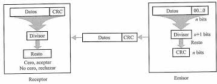
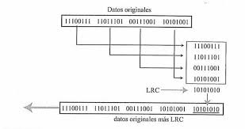

VRC, LRC y CRC son técnicas de detección de errores ampliamente utilizadas en telecomunicaciones. Cada una emplea distintos niveles de redundancia. Tanenbaum destaca su importancia en la transmisión confiable de datos.
Estas técnicas añaden información adicional a los datos transmitidos para verificar su integridad en el receptor. Forouzan señala que su complejidad y eficiencia varían según el método empleado.

